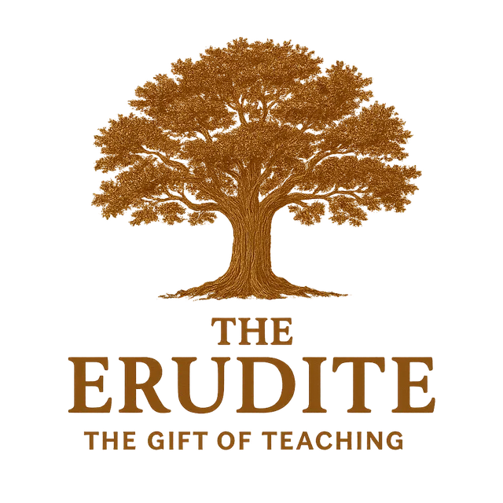

Analytical·Thorough·Patient·Precise·Knowledgeable·Insightful
The Erudite carries a divine hunger for truth and understanding, called to learn with rigor and share knowledge with clarity. They are driven by an insatiable curiosity and a commitment to intellectual honesty that makes them trusted sources of wisdom and insight.
"If it is serving, then serve; if it is teaching, then teach." — ROMANS 12:7
"Study to show yourself approved to God, a worker who does not need to be ashamed and who correctly handles the word of truth." — 2 TIMOTHY 2:15
The Erudite instinctively evaluates information and opportunities based on their intellectual merit and potential for deep understanding. They are selective about where they invest their mental energy, preferring depth over breadth.
Erudites are energized by the process of learning, researching, and gaining mastery over complex subjects. They thrive in environments that value knowledge and intellectual rigor.
They are compelled to seek truth through systematic study and to share their discoveries with others. Their greatest satisfaction comes from achieving deep understanding and helping others learn.
They possess an exceptional commitment to thorough research and logical analysis that ensures their conclusions are well-founded and trustworthy.
They have a natural gift for breaking down complex concepts and presenting them in ways that others can understand and apply.
They are driven by a desire for precision and truth that makes them reliable sources of information and wisdom.
They possess an insatiable hunger for learning that drives them to continuously expand their knowledge and understanding.
Their desire for thoroughness can sometimes prevent them from taking action or making decisions in a timely manner.
They may become frustrated with others who don't share their commitment to intellectual rigor and deep analysis.
They may struggle to connect with others on an emotional level, preferring logical analysis over emotional processing.
Teaching-oriented leaders guide through expertise and careful analysis.
Knowledge-Based Authority·Methodical Planning·Educational Leadership·Research-Driven Decisions·Intellectual Mentoring
Every gift carries a holy conviction—and every conviction can collide with another's. Naming the clash is the first step toward honoring it.
The Erudite's primary drive is to "correctly handle the word of truth" by researching it exhaustively. This puts them in direct opposition to the Catalyst, who operates on swift, intuitive discernment and wants to act immediately on that insight. The Erudite sees the Catalyst as reckless, while the Catalyst sees the Erudite as unnecessarily slow.
The Erudite wants to ensure they have achieved a mastery-level understanding of a subject before acting. This creates friction with the Servant, who sees a practical job that needs to be done and is compelled to take decisive action. The Erudite's need to keep thinking feels like procrastination to the action-oriented Servant.
To process information and gain understanding, the Erudite requires time and space for quiet, internal contemplation. This is the opposite of the Enthusiast, who processes ideas externally, through expressive conversation and relational brainstorming. The Erudite can feel drained and overwhelmed by the Enthusiast's energy, while the Enthusiast can feel shut out by the Erudite's silence.
The Erudite finds deep joy in acquiring knowledge for its own sake, exploring theories and principles without a necessary real-world application. This can be a point of contention with the Host, who views time and energy as resources to be invested for a fruitful, practical outcome and may see theoretical exploration as a poor return on investment.
The Erudite's goal is to understand all the variables before committing to a course of action. The Strategist, while valuing data, is comfortable making a decisive move with 80% of the information to maintain momentum toward the goal. The Erudite's need for more data can feel like a roadblock to the Strategist.
When faced with a problem, the Erudite's instinct is to deconstruct it with cool, dispassionate logic. This clashes with the Lover, who needs to approach the problem by first exploring and validating the heart-level feelings involved. The Erudite's logic can feel cold and dismissive to the Lover, while the Lover's feelings can seem like an irrelevant distraction to the Erudite.
The Erudite appears in 15 of the 35 archetypes of the soul. When it joins two other dominant gifts, it takes on a distinct expression.
To architect world-changing movements built on unimpeachable truth and brilliant strategy.
Read the archetype → 2To ground revolutionary ideas in meticulous research and diligent, hands-on work.
Read the archetype → 3To validate transformative ideas with rigorous analysis and then strategically fund their implementation.
Read the archetype → 4To translate complex truths into compelling, hopeful narratives that rally people to a cause.
Read the archetype → 5To deliver challenging truths with profound wisdom and deep empathy for the human heart.
Read the archetype → 10To design and execute complex projects with a masterful blend of strategic planning and meticulous craftsmanship.
Read the archetype → 11To build enduring, well-resourced institutions based on deep research and sound strategic planning.
Read the archetype → 12To develop people by combining clear, strategic guidance with inspiring, motivational coaching.
Read the archetype → 13To lead with profound wisdom and a clear plan, while providing deep, pastoral care for the team.
Read the archetype → 15To manage and multiply resources with profound diligence, wisdom, and meticulous attention to detail.
Read the archetype → 21To create a safe and uplifting space where deep empathy is paired with wise, insightful counsel.
Read the archetype → 28To make work and learning enjoyable and effective through clear instruction, practical help, and positive reinforcement.
Read the archetype → 29To provide care that is not only compassionate and practical but also deeply wise and discerning.
Read the archetype → 30To wisely invest in the potential of others, providing both the resources and the inspiration needed for them to flourish.
Read the archetype → 31To offer wise counsel and healing, backed by the generous provision of resources to aid in restoration.
Read the archetype →“Go therefore and make disciples of all nations... teaching them to observe all that I have commanded you.”Matthew 28:19-20: